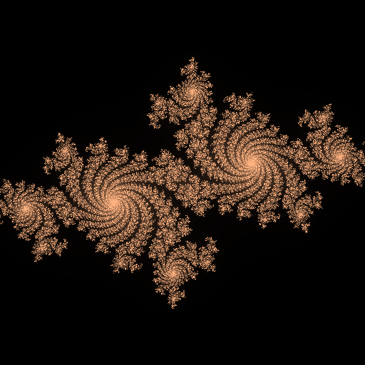
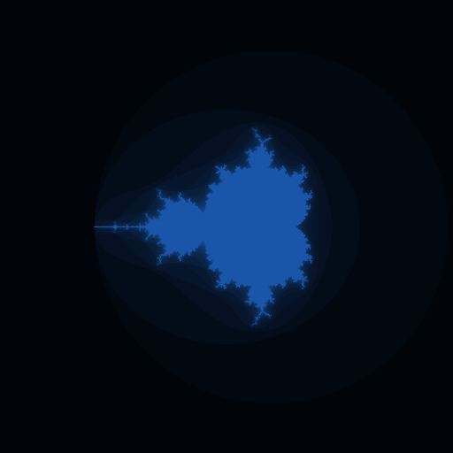
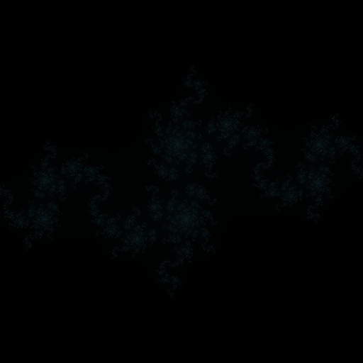
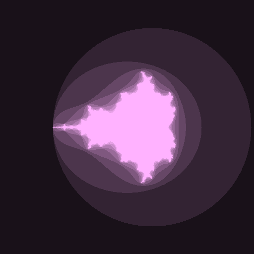
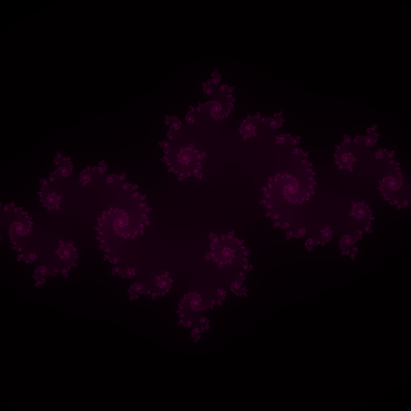
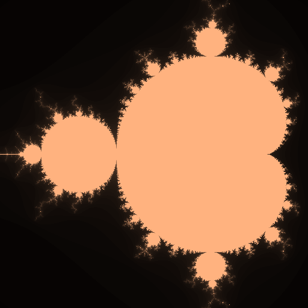

Fractal Imager
- rol
- Proyecto individual
- enfoque
- Mandelbrot · Julia · Newton · ruido Perlin y Simplex
Fractal Imager es mi sandbox de arte algorítmico, nacido de la curiosidad por ver cómo las matemáticas pueden generar color e impacto visual. La herramienta combina conjuntos fractales clásicos — Mandelbrot, Julia y Newton — con capas de ruido Perlin y Simplex para esculpir tanto siluetas fractales rígidas como texturas orgánicas en un mismo lienzo.
Un fractal es un patrón matemático que permite hacer zoom de forma indefinida y seguir encontrando estructuras que se parecen al conjunto, revelando detalle infinito en un espacio finito.
Un playground personalizado permite ajustar iteraciones, radio de escape, paletas de color y modulación de ruido mientras se previsualiza el resultado en tiempo real.






créditos
- Autor
- Carlos Mazcuñán
consejo: usa ← → para pasar de un proyecto a otro